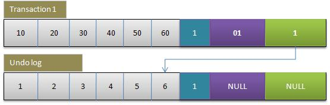

MVCC（Multi-Version Concurrency Control）即多版本并发控制。
MySQL的大多数事务型（如InnoDB,Falcon等）存储引擎实现的都不是简单的行级锁。基于提升并发性能的考虑，他们一般都同时实现了MVCC。当前不仅仅是MySQL,其它数据库系统（如Oracle,PostgreSQL）也都实现了MVCC。值得注意的是MVCC并没有一个统一的实现标准，所以不同的数据库，不同的存储引擎的实现都不尽相同。
MVCC优缺点
MVCC在大多数情况下代替了行锁，实现了对读的非阻塞，读不加锁，读写不冲突。缺点是每行记录都需要额外的存储空间，需要做更多的行维护和检查工作。
MVCC的实现原理
undo log
为了便于理解MVCC的实现原理，这里简单介绍一下undo log的工作过程
在不考虑redo log 的情况下利用undo log工作的简化过程为：
| 序号 | 动作 |
|---|---|
| 1 | 开始事务 |
| 2 | 记录数据行数据快照到undo log |
| 3 | 更新数据 |
| 4 | 将undo log写到磁盘 |
| 5 | 将数据写到磁盘 |
| 6 | 提交事务 |
1）为了保证数据的持久性数据要在事务提交之前持久化
2）undo log的持久化必须在在数据持久化之前，这样才能保证系统崩溃时，可以用undo log来回滚事务
Innodb中的隐藏列
Innodb通过undo log保存了已更改行的旧版本的信息的快照。
InnoDB的内部实现中为每一行数据增加了三个隐藏列(事务ID, 回滚指针, 隐藏的ID)用于实现MVCC。
| 列名 | 长度(字节) | 作用 |
|---|---|---|
| DB_TRX_ID | 6 | 插入或更新行的最后一个事务的事务标识符。（删除视为更新，将其标记为已删除） |
| DB_ROLL_PTR | 7 | 写入回滚段的撤消日志记录（若行已更新，则撤消日志记录包含在更新行之前重建行内容所需的信息） |
| DB_ROW_ID | 6 | 行标识（隐藏单调自增id） |
结构
|数据列 |.. |DB_ROW_ID |DB_TRX_ID |DB_ROLL_PTR|
MVCC工作过程
MVCC只在READ COMMITED 和 REPEATABLE READ 两个隔离级别下工作。READ UNCOMMITTED总是读取最新的数据行，而不是符合当前事务版本的数据行。而SERIALIZABLE 则会对所有读取的行都加锁
SELECT
InnoDB 会根据两个条件来检查每行记录：
- InnoDB只查找版本(DB_TRX_ID)早于当前事务版本的数据行（行的系统版本号<=事务的系统版本号,这样可以确保数据行要么是在开始之前已经存在了，要么是事务自身插入或修改过的）
- 行的删除版本号(DB_ROLL_PTR)要么未定义（未更新过），要么大于当前事务版本号（在当前事务开始之后更新的）。这样可以确保事务读取到的行，在事务开始之前未被删除。
NSERT
InnoDB为新插入的每一行保存当前系统版本号作为行版本号
DELETE
InnoDB为删除的每一行保存当前的系统版本号作为行删除标识
UPDATE
InnoDB为插入一行新记录，保存当前系统版本号作为行版本号，同时保存当前系统版本号到原来的行作为行删除标识
MVCC实现方式
1. Innodb的事务相关概念
为了支持事务，Innbodb引入了下面几个概念：
redo log:
redo log就是保存执行的SQL语句到一个指定的Log文件，当Mysql执行recovery时重新执行redo log记录的SQL操作即可。当客户端执行每条SQL（更新语句）时，redo log会被首先写入log buffer；当客户端执行COMMIT命令时，log buffer中的内容会被视情况刷新到磁盘。redo log在磁盘上作为一个独立的文件存在，即Innodb的log文件。
undo log:
与redo log相反，undo log是为回滚而用，具体内容就是copy事务前的数据库内容（行）到undo buffer，在适合的时间把undo buffer中的内容刷新到磁盘。undo buffer与redo buffer一样，也是环形缓冲，但当缓冲满的时候，undo buffer中的内容会也会被刷新到磁盘；与redo log不同的是，磁盘上不存在单独的undo log文件，所有的undo log均存放在主ibd数据文件中（表空间），即使客户端设置了每表一个数据文件也是如此。
rollback segment:
回滚段这个概念来自Oracle的事物模型，在Innodb中，undo log被划分为多个段，具体某行的undo log就保存在某个段中，称为回滚段。可以认为undo log和回滚段是同一意思。
锁:
Innodb提供了基于行的锁，如果行的数量非常大，则在高并发下锁的数量也可能会比较大，据Innodb文档说，Innodb对锁进行了空间有效优化，即使并发量高也不会导致内存耗尽。
对行的锁有分两种：排他锁、共享锁。共享锁针对读，排他锁针对写，完全等同读写锁的概念。如果某个事务在更新某行（排他锁），则其他事物无论是读还是写本行都必须等待；如果某个事物读某行（共享锁），则其他读的事物无需等待，而写事物则需等待。通过共享锁，保证了多读之间的无等待性，但是锁的应用又依赖Mysql的事务隔离级别。
隔离级别:
隔离级别用来限制事务直接的交互程度，目前有几个工业标准：
- READ_UNCOMMITTED：脏读
- READ_COMMITTED：读提交
- REPEATABLE_READ：重复读
- SERIALIZABLE：串行化
Innodb对四种类型都支持，脏读和串行化应用场景不多，读提交、重复读用的比较广泛，后面会介绍其实现方式。
下面演示下事务对某行记录的更新过程：
- 初始数据行

F1～F6是某行列的名字，1～6是其对应的数据。后面三个隐含字段分别对应该行的事务号和回滚指针，假如这条数据是刚INSERT的，可以认为ID为1，其他两个字段为空。
- 事务1更改该行的各字段的值

当事务1更改该行的值时，会进行如下操作：
用排他锁锁定该行
记录redo log
把该行修改前的值Copy到undo log，即上图中下面的行
修改当前行的值，填写事务编号，使回滚指针指向undo log中的修改前的行
- 事务2修改该行的值

与事务1相同，此时undo log，中有有两行记录，并且通过回滚指针连在一起。
因此，如果undo log一直不删除，则会通过当前记录的回滚指针回溯到该行创建时的初始内容，所幸的时在Innodb中存在purge线程，它会查询那些比现在最老的活动事务还早的undo log，并删除它们，从而保证undo log文件不至于无限增长。
事务提交
当事务正常提交时Innbod只需要更改事务状态为COMMIT即可，不需做其他额外的工作，而Rollback则稍微复杂点，需要根据当前回滚指针从undo log中找出事务修改前的版本，并恢复。如果事务影响的行非常多，回滚则可能会变的效率不高，根据经验值没事务行数在1000～10000之间，Innodb效率还是非常高的。很显然，Innodb是一个COMMIT效率比Rollback高的存储引擎。据说，Postgress的实现恰好与此相反。Insert Undo log
上述过程确切地说是描述了UPDATE的事务过程，其实undo log分insert和update undo log，因为insert时，原始的数据并不存在，所以回滚时把insert undo log丢弃即可，而update undo log则必须遵守上述过程。
- 事务级别
众所周知地是更新（update、insert、delete）是一个事务过程，在Innodb中，查询也是一个事务，只读事务。当读写事务并发访问同一行数据时，能读到什么样的内容则依赖事务级别：
READ_UNCOMMITTED
读未提交时，读事务直接读取主记录，无论更新事务是否完成
READ_COMMITTED
读提交时，读事务每次都读取undo log中最近的版本，因此两次对同一字段的读可能读到不同的数据（幻读），但能保证每次都读到最新的数据。
REPEATABLE_READ
每次都读取指定的版本，这样保证不会产生幻读，但可能读不到最新的数据
SERIALIZABLE
锁表，读写相互阻塞，使用较少
读事务一般有SELECT语句触发，在Innodb中保证其非阻塞，但带FOR UPDATE的SELECT除外，带FOR UPDATE的SELECT会对行加排他锁，等待更新事务完成后读取其最新内容。就整个Innodb的设计目标来说，就是提供高效的、非阻塞的查询操作。
- MVCC
上述更新前建立undo log，根据各种策略读取时非阻塞就是MVCC，undo log中的行就是MVCC中的多版本，这个可能与我们所理解的MVCC有较大的出入，一般我们认为MVCC有下面几个特点：
每行数据都存在一个版本，每次数据更新时都更新该版本
修改时Copy出当前版本随意修改，个事务之间无干扰
保存时比较版本号，如果成功（commit），则覆盖原记录；失败则放弃copy（rollback）
就是每行都有版本号，保存时根据版本号决定是否成功，听起来含有乐观锁的味道。。。，而Innodb的实现方式是：
事务以排他锁的形式修改原始数据
把修改前的数据存放于undo log，通过回滚指针与主数据关联
修改成功（commit）啥都不做，失败则恢复undo log中的数据（rollback）
二者最本质的区别是，当修改数据时是否要排他锁定，如果锁定了还算不算是MVCC？
Innodb的实现真算不上MVCC，因为并没有实现核心的多版本共存，undo log中的内容只是串行化的结果，记录了多个事务的过程，不属于多版本共存。但理想的MVCC是难以实现的，当事务仅修改一行记录使用理想的MVCC模式是没有问题的，可以通过比较版本号进行回滚；但当事务影响到多行数据时，理想的MVCC据无能为力了。
比如，如果Transaciton1执行理想的MVCC，修改Row1成功，而修改Row2失败，此时需要回滚Row1，但因为Row1没有被锁定，其数据可能又被Transaction2所修改，如果此时回滚Row1的内容，则会破坏Transaction2的修改结果，导致Transaction2违反ACID。
理想MVCC难以实现的根本原因在于企图通过乐观锁代替二段提交。修改两行数据，但为了保证其一致性，与修改两个分布式系统中的数据并无区别，而二提交是目前这种场景保证一致性的唯一手段。二段提交的本质是锁定，乐观锁的本质是消除锁定，二者矛盾，故理想的MVCC难以真正在实际中被应用，Innodb只是借了MVCC这个名字，提供了读的非阻塞而已。
- 总结
也不是说MVCC就无处可用，对一些一致性要求不高的场景和对单一数据的操作的场景还是可以发挥作用的，比如多个事务同时更改用户在线数，如果某个事务更新失败则重新计算后重试，直至成功。这样使用MVCC会极大地提高并发数，并消除线程锁。
ref:
https://www.jianshu.com/p/a3d49f7507ff
http://www.360doc.com/content/14/0821/09/12904276_403505950.shtml
参考资料
《高性能MYSQL》